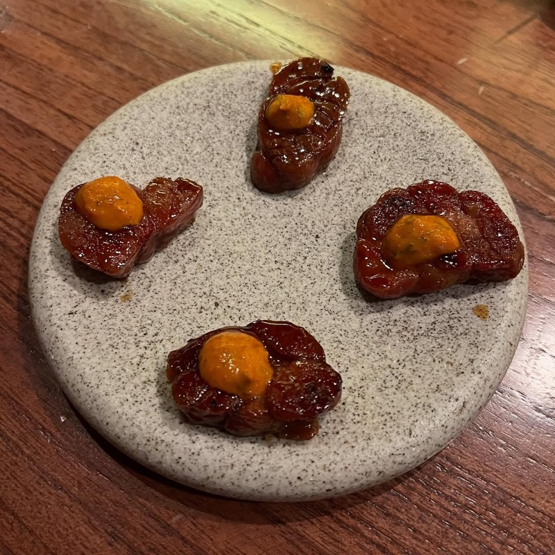
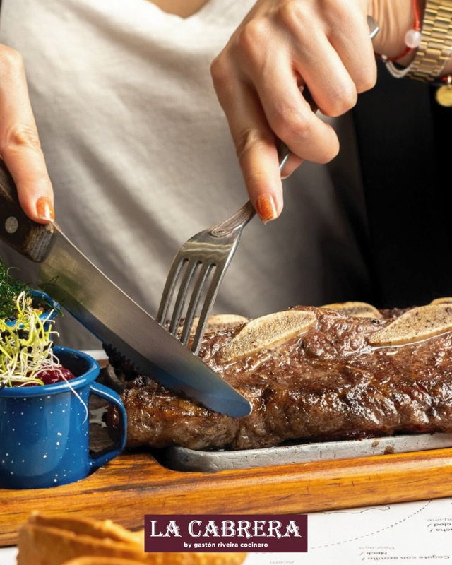
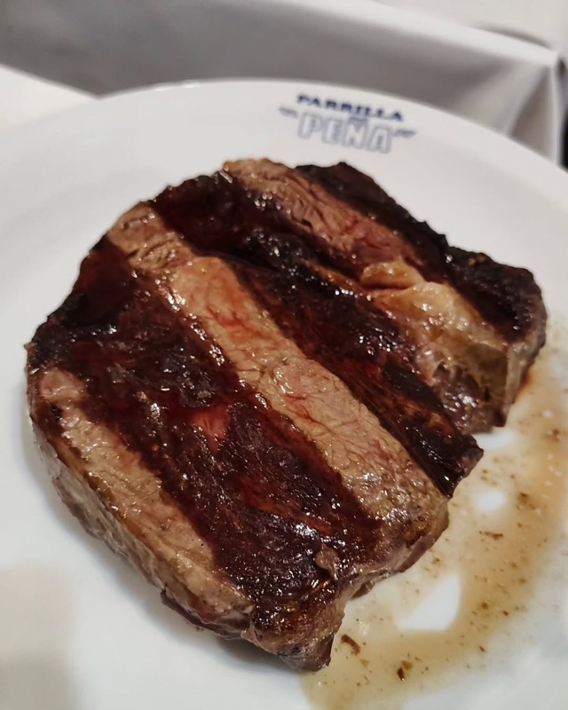
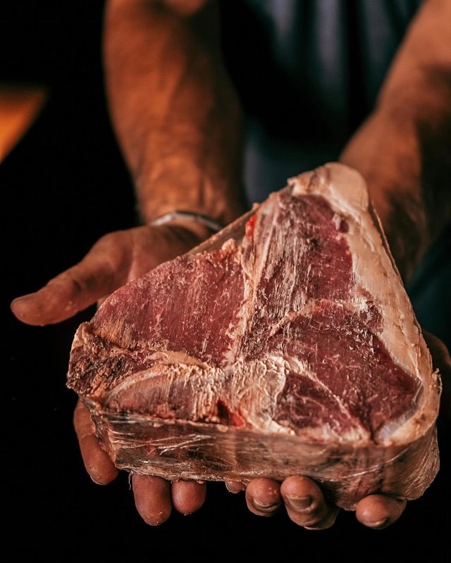
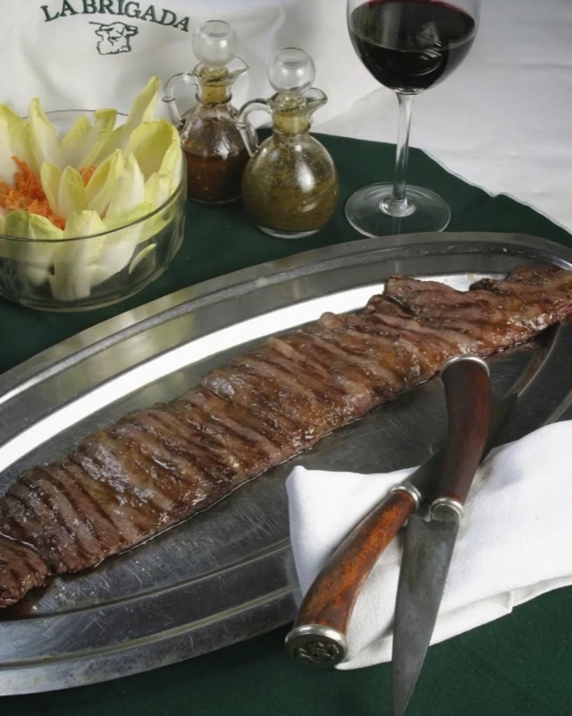
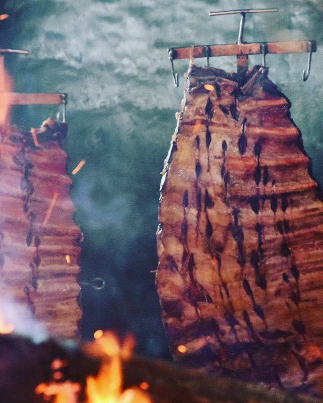
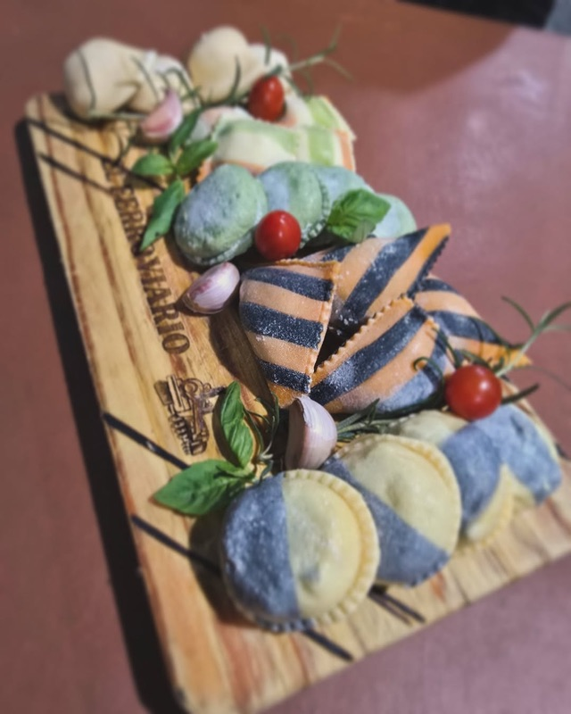
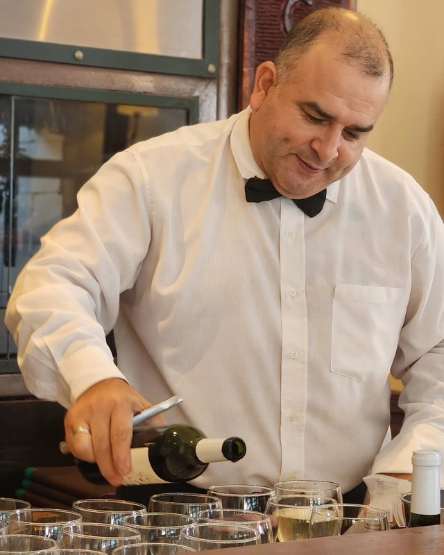
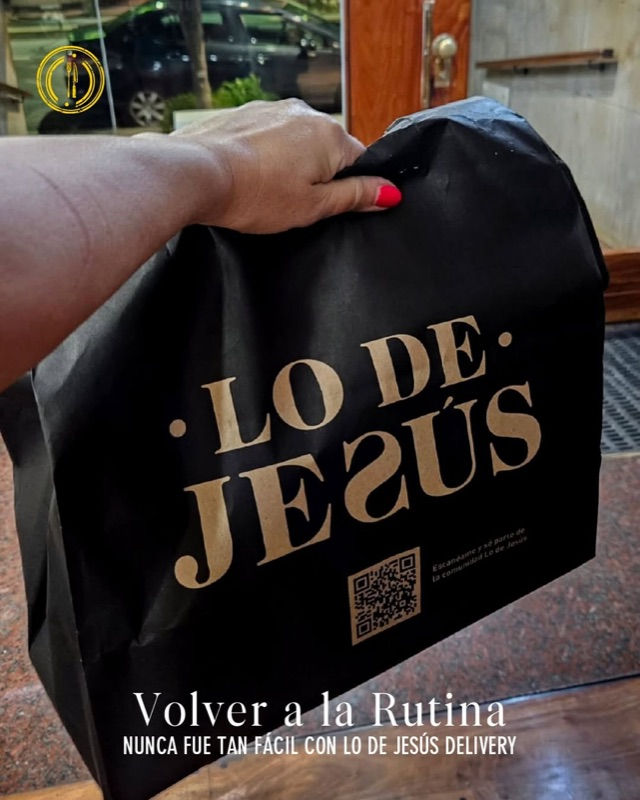
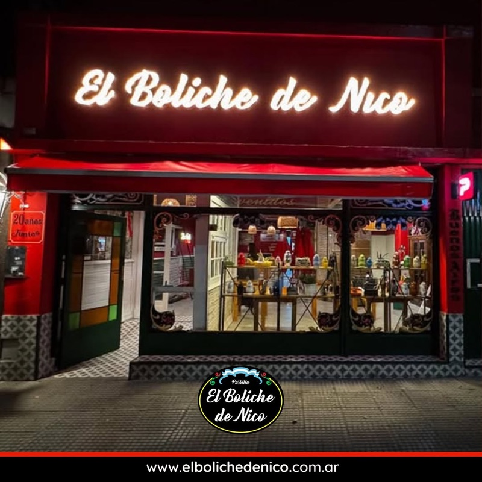

Buenos Aires is the steak capital of the world — a city where the parrilla (grill) is practically sacred and beef isn't just food, it's identity. But with hundreds of steakhouses competing for your appetite, separating the truly great from the tourist traps takes local knowledge.
We analyzed hundreds of Reddit posts from r/BuenosAires, r/argentina, r/steak, r/finedining, and r/travel to find the parrillas that actual residents and repeat visitors recommend over and over. From the world-famous Don Julio to the neighborhood bodegones where porteños actually eat — these are the steakhouses worth your time.
📊 How we built this list
We analyzed 200+ Reddit posts and 1,500+ comments across r/BuenosAires, r/argentina, r/steak, r/finedining, and r/travel — spanning 2020 to 2025. Parrillas were ranked by how frequently they were recommended by independent users. Every spot on this list was mentioned in at least 3 separate threads by different people. We weighted local porteño picks more heavily than first-time tourist posts.
💰 ARS 25,000–60,000 ($25–60 USD)
📍 Palermo Soho, Guatemala 4699
📌 Google Maps →

What to order: The ojo de bife (ribeye) or bife de chorizo (sirloin strip) — both from their own grass-fed cattle. Start with provoleta and empanadas. Their wine cellar is legendary — ask for a Malbec recommendation.
"I ate at a lot of parrilladas on this trip in BA and across Uruguay, and Don Julio was both the best and by far the most expensive."
— r/finedining · posted January 2025
"Don Julio isn't overrated IMO. It's easier to get in for lunch. La Cabrera just down the street is excellent."
— r/finedining · Best food in Buenos Aires thread
tabiji verdict: The world's most famous parrilla for a reason — the beef quality is genuinely elite. But it's controversial: locals think it's overpriced and the wait can be brutal (1-2 hours at dinner). Go for lunch to skip the chaos. If you can only do one fancy steakhouse, this is the one. If you want better value, keep reading.

What to order: It's a set multi-course asado experience — you don't choose. Expect provoleta, chorizo, morcilla, entraña, bife de chorizo, and more, all cooked over open flame. Wine pairings included.
tabiji verdict: Reddit's surprise #1 pick over Don Julio. This is an asado experience, not just a meal — a multi-course journey through Argentine grilling with wine pairings. More touristy than a neighborhood parrilla, but genuinely phenomenal. Book ahead.
💰 ARS 18,000–45,000 ($18–45 USD)
📍 Palermo Soho, Cabrera 5099
📌 Google Maps →

What to order: Bife de chorizo or ojo de bife — both come with a parade of small side dishes. Try the mollejas (sweetbreads) as a starter. Pro tip: arrive at 6:30 PM for their early-bird 30% discount (seating until 7:15 PM, must leave by 8:00 PM).
tabiji verdict: The original Palermo Soho steakhouse that put the neighborhood on the map. The side dishes are a feast unto themselves. Quality has dipped slightly according to some Redditors, but the early-bird discount makes it an incredible value play. Go early, save 30%.
What to order: Their entraña (skirt steak) is legendary. Also try the bife de chorizo and the morcilla (blood sausage). The meat is top-quality and portions are generous.
tabiji verdict: Reddit's best-kept secret in Palermo. Same quality tier as Don Julio at roughly half the price, with a fraction of the wait. If you want premium steak without the hype tax, this is your spot. Multiple Redditors rank it #1 in the city.
💰 ARS 8,000–20,000 ($8–20 USD)
📍 Recoleta, Rodríguez Peña 682
📌 Google Maps →

What to order: The parrillada completa (mixed grill platter) — it comes with bife, chorizo, morcilla, and achuras. Outstanding value. The empanadas are excellent starters.
tabiji verdict: The quintessential neighborhood parrilla — no frills, no tourists, just excellent grilled meat at prices that'll make you question why anyone waits 2 hours at Don Julio. This is where porteños actually eat. Come hungry.
💰 ARS 12,000–30,000 ($12–30 USD)
📍 Belgrano, Arribeños 2393
📌 Google Maps →

What to order: The mollejas (sweetbreads) — possibly the best in the city. The provoleta and the achuras platter are legendary starters. For mains, the vacío (flank steak) is incredible.
"El Pobre Luis made some of the best mollejas, pamplonas and salchichas parrilleras in the city. Be expected to wait as this steakhouse gets extremely packed — with locals."
— Pick Up The Fork · Best Parrillas in Buenos Aires
tabiji verdict: A Belgrano institution near Chinatown that's beloved by locals. The achuras (offal) here are world-class — especially the mollejas. It gets packed, so expect a wait, but that's a good sign. Worth the trek from the tourist zones.
💰 ARS 15,000–40,000 ($15–40 USD)
📍 San Telmo, Estados Unidos 465
📌 Google Maps →

What to order: The bife de chorizo — famously cut with a spoon to demonstrate tenderness. The ojo de bife is also excellent. Start with provoleta and a bottle of Malbec.
tabiji verdict: The iconic San Telmo parrilla — the spoon-cutting-steak trick is theatrical but the meat genuinely is tender. More touristy than it used to be, and some Redditors call it a tourist trap. But the quality is still solid, and the football-memorabilia atmosphere is uniquely Argentine. Go for lunch on a weekday.
What to order: The bife de chorizo with fries — enormous portion at an absurdly low price. The parrillada for two is insane value. Wash it down with house wine from the penguin-shaped jug.
tabiji verdict: The ultimate budget parrilla in San Telmo. Yes, it's touristy — it's right on Defensa street near the Sunday market. But the portions are enormous, the prices are rock-bottom, and the cantina vibes are genuinely fun. Perfect for your first steak in Buenos Aires when you don't want to blow the budget.
What to order: The entraña (skirt steak) and bife de chorizo are both outstanding. The provoleta is a must-start. Great Malbec list at fair prices.
tabiji verdict: A local favorite hiding in plain sight in Palermo Soho. Multiple Redditors prefer it over both Don Julio and La Cabrera — same neighborhood, better prices, no wait. If you want a great steak without the production, this is your no-brainer pick.
💰 ARS 8,000–18,000 ($8–18 USD)
📍 José León Suárez (outside CABA)
📌 Google Maps →

What to order: The asado de tira (short ribs), vacío, and their house-made embutidos (sausages). Everything is cooked slowly over wood. Get there early — the wait can be long.
tabiji verdict: The pilgrimage pick. It's outside the city in José León Suárez — a 40-minute Uber ride — but Argentine Redditors consistently call it the best parrilla in greater Buenos Aires. "Pueblo-style" grilling with unbeatable value. Take a local friend if you can. Not for the faint-hearted tourist.

What to order: The asado de tira and vacío are exceptional. Their achuras (offal platter) is one of the best in the city. Enormous portions at absurdly low prices.
tabiji verdict: Deep in the working-class neighborhood of Liniers — far from the tourist circuit. Locals love it for authentic, no-nonsense asado at rock-bottom prices. The neighborhood is "rough around the edges" (Redditors' words), so go during lunch and take an Uber. Worth it for the adventurous eater.

What to order: Start with the provoleta and empanadas. The bife de chorizo and entraña are excellent. Great outdoor patio seating.
tabiji verdict: A Palermo parrilla that's managed to stay under the tourist radar. The vibe is relaxed and local, the patio is lovely, and the meat is excellent. A great "Tuesday night steak" spot — the kind of place you'd become a regular at if you lived here.
What to order: The bife de chorizo is outstanding. The mollejas and provoleta are excellent starters. Known for friendly, attentive service.
"I'd recommend Río Alba. I thought it was just as good as (if not better than) Don Julio, but with much less tourists and a friendlier wait staff."
— r/steak · Don Julio rib eye thread, June 2024
tabiji verdict: The "better Don Julio" according to multiple Redditors — same neighborhood, same quality, far fewer tourists, and friendlier service. If you want the premium Palermo steakhouse experience without the circus, Río Alba delivers.

What to order: Their premium cuts are expertly grilled — try the ojo de bife or the bife de lomo. The wine list is curated and reasonably priced. Upscale ambiance without being stuffy.
tabiji verdict: The upscale pick that locals actually respect. Lo de Jesús bridges the gap between a neighborhood parrilla and a fine-dining steakhouse — quality cuts, proper wine service, and an atmosphere that feels like a special occasion without the Don Julio price tag.
What to order: The bife de chorizo paired with one of their Malbec selections. The wine focus here is the draw — they'll guide you through Argentine wine regions while you eat incredible steak.
tabiji verdict: The wine lover's parrilla. If you care as much about your Malbec as your bife, La Malbequería is the perfect marriage. Slightly touristy but in the best way — the wine education alone is worth the visit.
💰 ARS 8,000–20,000 ($8–20 USD)
📍 Villa Ortúzar, Av. de los Incas & Mariano Acha
📌 Google Maps →

What to order: The parrillada for two is massive and includes all the classics — bife, chorizo, morcilla, achuras. Their empanadas are a local favorite. Great house wine.
tabiji verdict: A bright red corner bodegón in the charming neighborhood of Villa Ortúzar. Zero tourists, all locals. The kind of place where the waiter knows everyone by name and the parrillada could feed a small army. This is the real Buenos Aires.
💰 ARS 20,000–50,000 ($20–50 USD)
📍 Puerto Madero, Alicia Moreau de Justo 516
📌 Google Maps →
What to order: The bife de lomo (tenderloin) from their own ranch. The complimentary bread basket and side dishes are generous. Waterfront terrace dining is spectacular.
tabiji verdict: The grand dame of Buenos Aires steakhouses on the Puerto Madero waterfront. Is it touristy? Absolutely. But they raise their own cattle and the setting is gorgeous. Best for a special occasion or when you want white-tablecloth service with your bife. Not where locals go for a casual steak.
What to order: The vacío (flank steak) and bife de chorizo are the stars. Excellent relación precio-calidad (value for money). The empanadas are homestyle and perfect.
tabiji verdict: A neighborhood secret (hence the name) in the pleasant Las Cañitas area near the polo grounds. Impeccable price-to-quality ratio. The kind of place you'd go weekly if you lived in BA — nothing fancy, just reliably great steak at honest prices.
Frequently Asked Questions
What is the best steakhouse in Buenos Aires?
Don Julio in Palermo is the most famous and was named the world's best steakhouse. However, many Reddit users and locals recommend alternatives like Fogón Asado for the full experience, La Carnicería for value, or Parrilla Peña for an authentic local parrilla. The "best" depends on whether you want prestige (Don Julio), experience (Fogón Asado), or authenticity (Parrilla Peña, Los Talas del Entrerriano).
How much does a steak dinner cost in Buenos Aires?
Prices range widely. At a neighborhood parrilla like El Desnivel or Parrilla Peña, expect ARS 8,000–15,000 ($8–15 USD) per person. Mid-range spots like La Cabrera or Calden del Soho run ARS 15,000–30,000 ($15–30 USD). Premium restaurants like Don Julio can reach ARS 40,000–80,000+ ($40–80+ USD) per person with wine. Argentina remains exceptional value for steak compared to the US or Europe.
What cuts of steak should I order at a Buenos Aires parrilla?
The essential Argentine cuts: bife de chorizo (sirloin strip — the classic), entraña (skirt steak — intensely flavorful), ojo de bife (ribeye), vacío (flank steak), and bife de lomo (tenderloin). Don't miss the achuras: mollejas (sweetbreads), riñones (kidneys), and chinchulines (intestines). Always start with provoleta (grilled provolone cheese) and empanadas.
Is Don Julio worth the hype and wait?
Opinions are split. The beef quality is undeniably excellent, but many visitors feel it's overpriced compared to other Buenos Aires parrillas. The dinner wait can be 1-2 hours. Pro tip: go for lunch — same food, easier to get in. If you skip Don Julio, Redditors recommend La Carnicería, Fogón Asado, Río Alba, and Calden del Soho as better-value alternatives.
What is the difference between a parrilla and an asado?
A parrilla is both the grill itself and the type of restaurant that serves grilled meats. An asado is the social event — a traditional Argentine barbecue. In restaurants, "asado" also refers to beef ribs/short ribs cooked on the bone. When Argentines say "let's have an asado," they mean fire, meat, wine, friends, and several hours of eating.
When should I go to avoid crowds?
Argentines eat dinner late — 9:00–10:30 PM is normal. Arrive at 8:00 PM and you'll often skip the wait. Lunch (12:30–2:30 PM) is excellent at popular spots like Don Julio. Some parrillas like La Cabrera offer early-bird discounts (6:30–8:00 PM, 30% off). Weekday lunches are always quieter than weekend dinners.